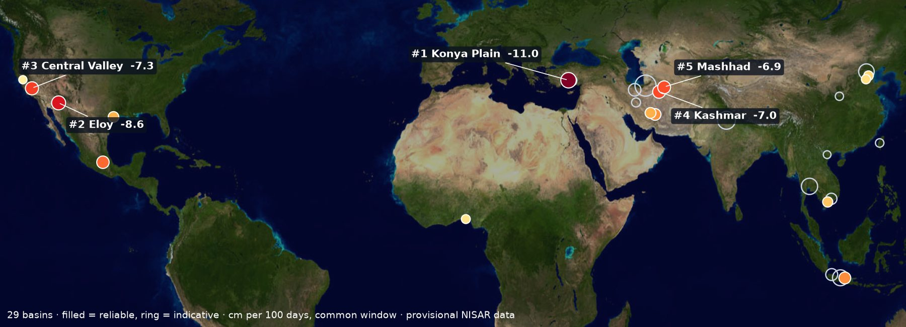

Science & method
How we turn radar echoes into centimetres
Four steps, each one checked. Plain English first; the technical details are folded further down for anyone who wants them.
- 1Two radar snapshots
NISAR flies over the same spot every 12 days and bounces microwaves off the ground, day or night, through clouds.
- 2Measure the shift
Comparing two passes shows how far the ground moved toward or away from the satellite (its "line of sight"), to a fraction of a centimetre.
- 3Catch our own errors
Every basin's time series is tested for jumps of exactly one radar wave cycle (12.1 cm) and for bad dates. Ten GPS stations check the result on the ground.
- 4Rank only what passes
All 20 basins are measured over the same 93 days. Only the 9 that pass every check are ranked; the rest are shown as "indicative".



Results
In short
- What was measured. 20 sinking basins on three continents, all with the same open method and the same 93-day window (28 Jun – 29 Sep 2026), from provisional NISAR radar data.
- The main result. 9 basins pass every check; the fastest is Eloy, Arizona at −8.6 cm (−3.4 in) per 100 days. About 370,000 people live on ground that sank more than 5 cm (2 in) in one summer.
- How we checked it. Against 10 GPS stations: r = 0.924 and RMSE 1.37 cm (0.54 in) at the final date, plus a second satellite view from the opposite direction.
- What it means. Uneven sinking tilts canals and roads; in Karapınar the ground sank faster close to documented sinkholes. Over London no movement above the noise was found.
- What it cannot tell. One summer only, so yearly rates are estimates; the satellite sees the ground at a slant; NISAR data are still provisional.
Key findings
1 · Data
| Product | What it is | Use here |
|---|---|---|
| GUNW (L2) | Geocoded unwrapped interferogram: a pair of radar images processed to show ground movement | Ground motion: Central Valley, Karapınar and London |
| GCOV (L2) | Radiometrically terrain-corrected backscatter (γ⁰) | Radar view of the Fens (quick-look) |
| SME2 (L3) | Soil moisture | Irrigation timing vs sinking (data/central_valley/drivers.json) |
All products come from NASA's Alaska Satellite Facility DAAC (search: platform=NISAR). Measurements on the main page use only PROVISIONAL products (composite release P05023) whose two dates are on or after 17 June 2026.
2 · Phase → centimetres
Interferometric synthetic aperture radar (InSAR) compares radar echoes from separate satellite passes. It measures movement along the satellite's line of sight (LOS), toward or away from the satellite; a rate in cm/100d means centimetres per 100 days.
dLOS = −λ / (4π) · (φunw − φiono)
negative dLOS = motion away from the satellite (subsidence)
The sign convention follows ISCE3 (interferogram = reference × conj(secondary)) and MintPy's NISAR reader. Pixels with coherence < 0.3 or connected component 0 are masked, as are small isolated patches and pixels that jump by half a phase cycle from their 720 m neighbourhood (unwrapping errors). From each pair a plane plus a linear elevation term (Copernicus DEM) is removed to reduce long-wavelength and height-dependent atmospheric delay. Every pair is referenced to the same stable, highly coherent area. Vertical estimates assume no horizontal motion: dvert ≈ dLOS / cos θinc.
3 · Time series
Consecutive pairs (12 to 24 days apart; 28 Jun → 14 Oct 2026 for track 34) are summed into a cumulative map. A chain with any gap is not joined. Headline numbers are the most negative median of ~1 km blocks with ≥ 50 % valid pixels and within-block standard deviation ≤ 2 cm, so single-pixel unwrapping errors cannot set the headline. Re-referencing the whole chain to up to two other stable areas at least 30 km away moves the Central Valley maximum between −4.7 and −7.8 cm (line of sight); we report the range. Two orbits looking from opposite sides (tracks 34 and 114) let us also separate vertical from east–west motion (data/central_valley/vertical.json).
4 · Validation against GPS
We compared the NISAR vertical estimate with daily "up" positions from 10 continuous GPS stations (Nevada Geodetic Laboratory) over the same dates.
| Station | Correlation r | RMSE (cm) | GPS end (cm) | NISAR end (cm) |
|---|
5 · Infrastructure risk index
For every canal, major road and railway segment from OpenStreetMap longer than 1 km, we sample the cumulative map along the line and compute the sinking gradient (mm per km) and the total sinking. High: gradient ≥ 10 mm/km with sinking ≥ 2 cm, or total sinking ≥ 10 cm. Medium: gradient ≥ 5 mm/km with sinking ≥ 1 cm, or total sinking ≥ 5 cm. Gradients matter because uneven sinking tilts canals and reduces their capacity.
6 · Limits
- Radar measures along its slanted line of sight; horizontal motion would bias the vertical estimate.
- Troposphere and ionosphere add centimetre-level noise per pair; summing pairs accumulates it.
- Over London's clay the same method found no motion above the 3σ noise level (about 3.6 cm): small seasonal clay movement is below what one summer of data can resolve.
- Yearly rates extrapolated from one irrigation season overstate the net annual rate, because part of summer subsidence recovers in winter.
- Data are provisional and may change when the NISAR project releases validated products.
7 · Calibration status
8 · Sources
Comparison with published studies
Uncertainty budget
Validation report
Infrastructure risk dossier
Global Atlas time-series QC (Top 5 check)
Learn more
- NISAR StoryMap: Land Subsidence — how radar sees sinking from groundwater pumping (Central Valley example).
- NISAR applications — NASA papers on subsidence, groundwater, levees and dams, sinkholes and food security.
- NISAR mission (NASA JPL) and the NISAR data user guide (ASF).
- What is synthetic aperture radar? (NASA Earthdata) — wavelength, polarisation, how radar sees the ground.
- NASA ARSET trainings — free online courses on SAR and NISAR.
- UAVSAR postcards — airborne L-band radar images, the predecessor of NISAR's view.
- SAR tutorial in Python (Canadian Space Agency).
- USGS: Land subsidence in California.
- Find and download NISAR data yourself: ASF Vertex · our guide “Reproduce our data in 5 steps”.